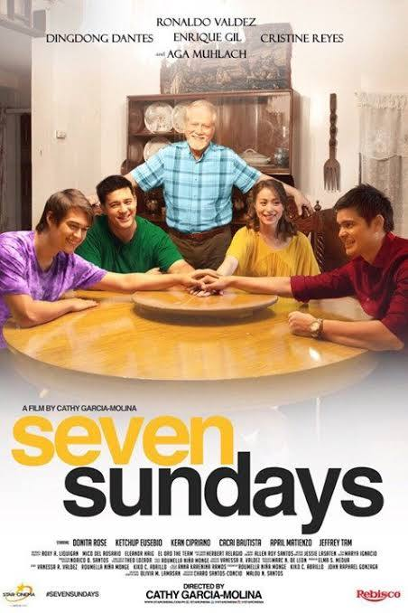

Four estranged siblings reunite when they discover their father has terminal cancer. With seven Sundays left before his prognosis, they must spend each Sunday together, rediscovering family bonds they had let unravel.